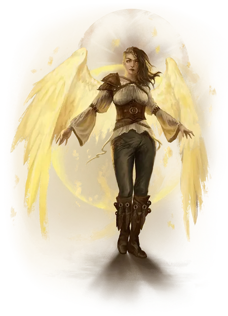

Незримо присутствующий
Veiled Presence
Маленький или Средний Небожитель, законно-злой

Класс Доспеха 20 (природный доспех)
Хиты 300 (40к8 + 120)
Скорость 40 футов, летая 80 футов (парит)
| мод | спас | ||
|---|---|---|---|
| СИЛ | 14 | +2 | +2 |
| ЛОВ | 24 | +7 | +14 |
| ТЕЛ | 16 | +3 | +3 |
| мод | спас | ||
|---|---|---|---|
| ИНТ | 24 | +7 | +14 |
| МДР | 20 | +5 | +5 |
| ХАР | 22 | +6 | +6 |
Навыки Восприятие +12, Скрытность +21
Сопротивление урону излучение, некротическая энергия
Иммунитет к состояниям испуг, очарование
Чувства слепое зрение 30 футов, пассивное Восприятие 22
Языки Все
Опасность 21 (33000 опыта)
Бонус мастерства +7
Особенности
Неприкосновенное присутствие. Незримо присутствующий не может стать целью магии Прорицания или умений, позволяющих читать его мысли или определять тип его существа.
Легендарное сопротивление (3/день). Если незримо присутствующий проваливает спасбросок, он может вместо этого сделать спасбросок успешным.
Действия
Мультиатака. Незримо присутствующий совершает две атаки Клинком правосудия и может использовать Откровение.
Клинок правосудия. . Рукопашная или Дальнобойная атака оружием: +14 к попаданию, досягаемость 5 футов или дистанция 60 футов, одна цель. Попадание: 10 (1к6 + 7) колющего урона плюс 27 (6к8) урона излучение. Если целью является существо, оно должно преуспеть в спасброске Харизмы Сл 22, иначе до конца своего следующего хода оно может перемещаться или использовать действие, но не может использовать сразу оба.
Откровение. Незримо присутствующий раскрывает проблеск своей потусторонней природы существу, которое оно может видеть в пределах 30 футов. Цель должна преуспеть в спасброске Мудрости Сл 22, иначе станет парализованным до конца своего следующего хода, после чего цель становится невосприимчива к этому Откровению в течение 24 часов.
Реакции
Невероятное уклонение. Когда нападающий, которого незримо присутствующий может видеть, попадает по нему атакой, он может реакцией уменьшить вдвое урон, причиняемый ему этой атакой.
Легендарные действия
Незримо присутствующий может совершить 3 легендарных действия на выбор из перечисленных ниже вариантов. Лишь одно легендарное действие может быть совершено за один раз, и только в конце хода другого существа. Незримо присутствующий восстанавливает истраченные действия в начале своего хода.
Яркий шаг. Незримо присутствующий волшебным образом телепортируется вместе с любым снаряжением, которое оно несёт или носит, на расстояние до 40 футов в незанятое пространство, которое оно может видеть.
Ранение (стоит 2 действия). Незримо присутствующий совершает одну атаку Клинком правосудия.
Испепеляющее сияние (стоит 3 действия). Незримо присутствующий начинает волшебным образом излучать ослепительный свет в сфере радиусом 10 футов, центрированным на себе, до конца своего следующего хода, в течение которого броски атаки против него совершаются с помехой, а оно совершает броски атаки с преимуществом. Сфера перемещается вместе с незримо присутствующим. Когда другое существо начинает свой ход в этом свете или впервые выходит в свет в свой ход, оно должно совершить спасбросок Телосложения Сл 22, нанося 18 (4к8) урона излучением при провале или половину этого урона при успехе.
Логово
Этот незримо присутствующий обитает в месте силы и безопасности, будь то скрытое здание гильдии воров или роскошный особняк. Логово наполнено хитроумными ловушками, которые дезориентируют, ослабляют и убивают незваных гостей.
ПО развратителя увеличивается до 22 (41,000 опыта), если столкновение происходит в его логове.
Действия логова
При значении инициативы «20» (проигрыш при ничье), незримо присутствующий может совершить действие в логове, чтобы создать один из следующих эффектов; он не может использовать один и тот же эффект два раунда подряд:
Отвлечение. Пронзительный звук наполняет логово. Существа, которые могут его слышать, должны преуспеть в спасброске Телосложения Сл 15, иначе их концентрация прерывается.
Западня. Скрытые ловушки нацеливаются на трёх существ, которых незримо присутствующий может видеть в логове. Каждое существо должно преуспеть в спасброске Силы Сл 15, иначе станет схваченным (Сл высвобождения 15) и опутанным до тех пор, пока не высвободится или удерживающая его ловушка не будет уничтожена. Каждая ловушка имеет КД 11, 10 хитов и обладает иммунитетом к урону ядом и психической энергией.
Ловушки. Ловушки нацеливаются на двух существ, которых незримо присутствующий может видеть в логове. Каждая цель должна преуспеть в спасброске Ловкости Сл 15, иначе попадёт в ловушку. Незримо присутствующий бросает 7к6 и пораженные цели получают урон, равный общему выпавшему значению. Урон является дробящим, колющим, рубящим, уроном ядом или огнём, по выбору незримо присутствующего, когда он использует это действие.
Местные эффекты
Местность, в которой находится логово незримо присутствующего, искажается его присутствием, создавая один или несколько из следующих эффектов:
• Процветание коррупции. Находясь в пределах 3 миль от логова, существа, которые не являются членами организации незримо присутствующего с помехой совершают проверки характеристик, основанных на навыках Проницательности, Восприятия и Убеждения.
• Сильнодействующие токсины. Когда члены организации незримо присутствующего наносят урон ядом, находясь в пределах 3 миль от логова, они игнорируют сопротивление цели к урону ядом.
Если незримо присутствующий умирает, эти эффекты исчезают в течение 1к10 дней.
Описание
Невероятная угроза, создаваемая картой Плута - является незримо присутствующий Небожитель для партий 4-го уровня (уровни с 17 по 20). Это существо спускается с Внешнего плана, чтобы обрушить гнев космоса на персонажей.